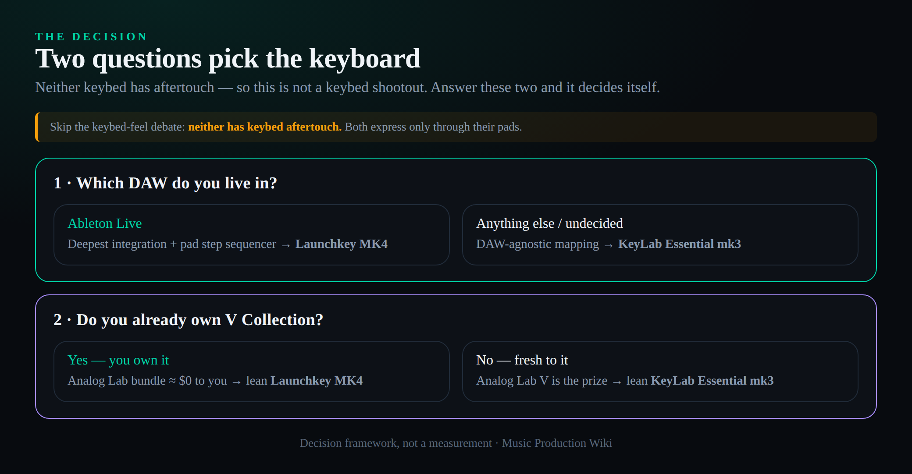
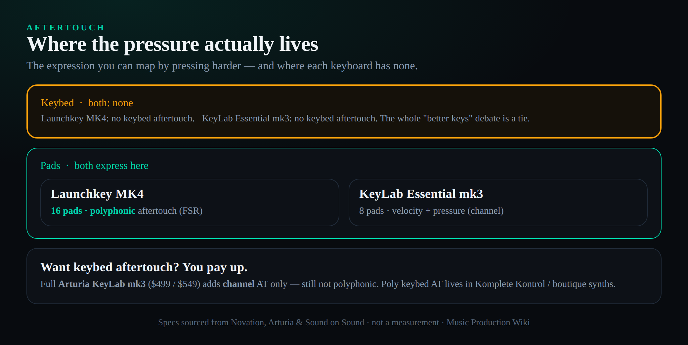
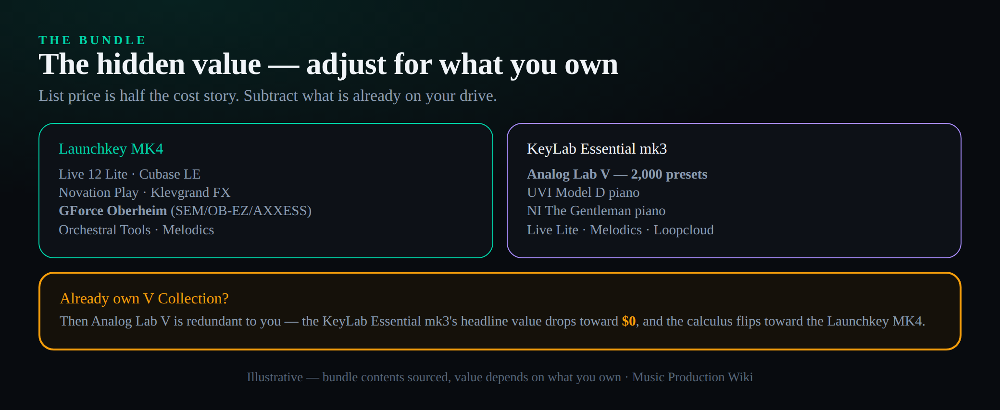

The short answer
Neither of these keyboards has aftertouch in its keybed, so stop comparing them on "which keys feel more expressive" — that contest has no winner. The real decision rests on two questions. Which DAW do you actually live in? If the answer is Ableton Live, the Novation Launchkey MK4 gives you the deepest in-class integration plus a pad step sequencer nothing in this price range matches. And will you ever open the bundled software? If you do not already own Arturia's V Collection, the KeyLab Essential mk3 hands you Analog Lab V — two thousand presets drawn from seven thousand sounds — which is the single biggest slab of free value in the category. Answer those two and the keyboard picks itself. Our scores land at 9.0 for the Launchkey MK4 and 8.6 for the KeyLab Essential mk3, and we flip that verdict openly for the producer who lives in V Collection and never touches Ableton.
Walk into any forum thread about mid-tier MIDI controllers and you will watch the same argument play out: someone asks whether the Launchkey or the KeyLab has the better keybed, a dozen replies debate semi-weighted versus synth-action feel, and nobody mentions the fact that decides far more about how either keyboard plays in your DAW. Neither one has keybed aftertouch. Press a key down to its floor and lean in, and nothing happens — no vibrato swell, no filter open, no volume push. Sound on Sound's reviewer put it bluntly when the KeyLab Essential's chassis flexed under his thumb: he was "testing the aftertouch before you realise it doesn't have any." Novation's own spec for the Launchkey MK4 keybed is identical in the one place that matters: the only expressive pressure on the instrument lives in the pads, not the keys. So the entire "which keybed feels better" debate is a tie before it starts, because both keybeds do the same thing when you push past the bottom — nothing.
That single fact reframes everything. Once you accept that you are not buying keybed aftertouch at this price, the two keyboards stop being rivals on the same axis and become answers to two completely different questions. This comparison is built around those questions, and we are going to keep coming back to them, because every spec on the sheet eventually resolves into one or the other.
The two questions that actually decide it
The first question is which DAW you live in. A MIDI controller is a remote control for software, and the value of a remote control is almost entirely about how well it speaks to the thing it controls. The Launchkey was born inside Ableton Live — the Launchpad grid that started the whole Novation control story was a hardware mirror of Live's session view — and the MK4 carries the deepest Live integration of any keyboard in its class. The KeyLab took the opposite road: it was built to be DAW-agnostic, to drop ready-mapped controls into whatever you already use, and to talk fluently to Arturia's own software through a dedicated mode. Neither approach is better in the abstract. One is better for you, and the answer is whichever DAW already has your projects open.
The second question is whether you will ever use the bundle. Both keyboards ship with a pile of software, and on a spec sheet the bundles look like a wash. They are not. The KeyLab's headline bundle is Analog Lab V, Arturia's curated front end to its V Collection — and if you already own V Collection, that headline is worth exactly nothing to you, because you have those sounds already. The same logic runs in reverse: the Launchkey throws in a GForce Oberheim collection and Novation's own sampled-synth instrument that you may or may not care about. The bundle is the hidden swing factor in the price, and almost nobody quantifies it honestly. We will.
Hold those two questions in your head. Keys, pads, screens, faders — all of it matters, and we will go through it carefully — but every one of those details is really evidence for one of the two questions, not a tiebreaker on its own.

The aftertouch reality nobody mentions
Let us be precise about pressure expression, because "aftertouch" gets used loosely and the loose version is what fuels the bad forum advice. Aftertouch is the controller sensing how hard you press after the key is already down, and sending that pressure as a continuous stream you can map to anything — vibrato, filter cutoff, volume, a wavetable position. Channel aftertouch sends one pressure value for the whole keyboard. Polyphonic aftertouch sends a separate value for every key you are holding, which is the expressive holy grail and almost never appears below a thousand dollars (it is one of the few things that separates these from the Komplete Kontrol tier).
On the keybeds, here is the honest map. The Launchkey MK4 has no keybed aftertouch of any kind. The KeyLab Essential mk3 has no keybed aftertouch of any kind either. If you want even channel aftertouch in your keys, you have to step up to the full Arturia KeyLab mk3 — the non-Essential model — which runs roughly $499 for the 49-key and $549 for the 61-key, and even that flagship only gives you channel aftertouch, not polyphonic. Arturia put polyphonic aftertouch in the four-thousand-dollar PolyBrute 12 and pointedly did not bring it down to the KeyLab; Sound on Sound called that a missed opportunity, and they were right. The other route to real keybed aftertouch at a sane price is Native Instruments' Komplete Kontrol line, which is its own conversation. The point stands: at the Launchkey-and-KeyLab-Essential tier, keybed aftertouch is simply not on the menu.
The pads are where the two part ways, and this is a genuine Launchkey advantage that the spec sheets bury. The Launchkey MK4 carries sixteen of Novation's patented force-sensitive resistor pads, each with a radial sensor, and they have polyphonic aftertouch — full per-pad pressure expression. The KeyLab Essential mk3 has eight RGB pads that are velocity- and pressure-sensitive, which sounds similar until you notice it is channel-style pressure across eight pads rather than per-pad poly across sixteen. If you finger-drum, if you play pad chords with expression, if you lean on the pads as a performance surface rather than a clip-launch grid, the Launchkey gives you twice the pads and a more expressive pressure model. That is not a marketing tie. It is a real, usable gap.
So the corrected summary, the one you will not get from a vendor blog: neither keyboard expresses through its keys, both express through their pads, and the Launchkey expresses through its pads better — more pads, true polyphonic pressure. If pad performance is central to how you work, that alone may settle it before we discuss a single other feature.

It is a DAW-allegiance decision
This is the question that decides more than any other, so spend real time on it. A MIDI controller earns its keep by how little you have to reach for the mouse, and that depends entirely on how deeply the hardware is mapped to your software. Both of these keyboards are good at it. They are good at it in opposite ways.
The Launchkey MK4 is, first and last, an Ableton Live machine. Novation co-developed the original Launchpad with Ableton, and the lineage shows: in Live you get clip and scene launching, a Drum Rack mode, transport, mixer control, and — the headline — a step sequencer driven from the pads. Hold a note or drum sound, tap the pads, and you are programming a sixteen-step pattern without touching the screen, then editing velocity and length from the same grid. The 49- and 61-key models add Capture MIDI, Undo, Quantise and Metronome buttons that map straight to Live's equivalents. Outside Ableton the MK4 is still strong — Novation ships custom scripts for Logic Pro, Cubase, FL Studio and Reason, with generic HUI control for Reaper, Pro Tools and Studio One — but the depth tapers as you move away from Live. If your projects live in Ableton, nothing else in this price bracket comes close to how the Launchkey disappears into the workflow.
The KeyLab Essential mk3 made the opposite bet. It is built to be DAW-agnostic and to be brilliant at controlling Arturia's own software. It ships custom scripts for Ableton Live, Logic Pro, Bitwig, Cubase and FL Studio, and falls back to the universal MCU/HUI protocol for everything else, so it drops ready-mapped into more setups out of the box without favouring one. Its special trick is the Arturia mode: a dedicated control layer designed around Analog Lab and the rest of the V Collection, where the encoders, faders and that bright screen turn the software into something close to a hardware synth you can browse and tweak without menu-diving. If you are equally happy in three different DAWs, or you spend most of your sound-design time inside Arturia instruments, the KeyLab's even-handed integration plus its Arturia hooks is the better fit.
It is worth understanding what "custom script" actually buys you, because it is the whole game. A custom DAW script is a deep, two-way mapping the manufacturer wrote specifically for that software: the encoders know they are controlling this plugin's parameters, the transport buttons fire the right commands, the screen reflects what the DAW is doing, and clip and scene control work natively. The generic MCU/HUI protocol both keyboards fall back to is a far thinner, one-size-fits-all mixer-control standard — you get faders, transport and basic navigation, but none of the deep device awareness. So when people say the Launchkey is "deepest in Ableton," they mean its native Live script reaches into corners HUI cannot; and when the KeyLab leans on MCU/HUI for an unsupported DAW, you are getting competent mixer control, not the seamless mind-meld the scripted DAWs enjoy. Match the keyboard to a DAW each one actually has a native script for, and you avoid the disappointment of buying expressive hardware that ends up driving a generic protocol.
The Launchkey's Ableton step sequencer deserves a sentence on what it actually feels like, because it is the MK4's signature trick. It is not the same as recording a MIDI part: you are not playing in real time and cleaning up afterward. You hold the note or drum sound you want, tap a pad to place it on one of sixteen steps, and build a pattern step by step — drum grids, basslines, melodic loops — then nudge velocity and length from the same pads, all without the mouse and all locked to Live's grid. It is a genuinely different way to write that lives only inside Ableton; the KeyLab has no equivalent. If that workflow appeals to you, it is a Launchkey-only reason to buy.
So the test is simple and personal: open the DAW you actually start projects in. If it says Ableton Live across the top, the Launchkey was built for that exact screen. If it says anything else — or if it says "whatever I feel like that day" — the KeyLab's agnostic mapping serves you better, and its Arturia mode is a bonus if you own or want Arturia's instruments.
Keys, pads, screen, faders: the hands-on stuff
With aftertouch off the table and DAW allegiance covered, the remaining hardware differences are real but secondary. Take them in order.
It helps to know what "semi-weighted" really means here, because the marketing word hides two different feels. A fully weighted, hammer-action keybed mimics an acoustic piano's resistance and is heavy; a pure synth action is light and springy with little resistance. "Semi-weighted" sits between, and the implementation matters more than the label. The Launchkey's 49 and 61 use waterfall keys — flat-fronted, organ-style key tops that many players find faster for synth and clip work — with a piano-leaning resistance, which is why pianists tend to prefer them. The KeyLab's hybrid keybed is lighter and springier, friendly for fast passages and finger-drumming on the keys, less so for someone chasing a piano feel — a lighter action closer to Arturia’s MiniLab 37. Play both if you can; this is the kind of difference your hands decide in thirty seconds and a spec sheet can never settle.
The keybed. On the 49- and 61-key models the Launchkey MK4 uses semi-weighted, piano-style "waterfall" keys that reviewers consistently call the better feel in the budget class — Sound on Sound described them as "piano-lipped," and players who practise actual piano tend to prefer them. The KeyLab Essential mk3 uses a semi-weighted hybrid synth-piano keybed that Sound on Sound called a "decent synth-style resistance" — lighter, springier, perfectly playable, but a notch less piano-like. Neither is a Fatar-grade keybed and neither has aftertouch, so this is a feel preference, not a capability gap. If your hands grew up on piano, the Launchkey edges it; if you want a light, fast synth action, the KeyLab is genuinely pleasant.
The pads. We covered this under aftertouch, but it bears repeating in the controls context because it is the biggest single hardware difference: sixteen polyphonic-aftertouch FSR pads on the Launchkey — finger-drumming territory it shares with the Akai MPK Mini — versus eight pressure-sensitive RGB pads on the KeyLab. Twice the pad real estate and a better pressure model. For finger-drumming and pad performance the Launchkey simply gives you more to work with.
The screen. Here the KeyLab takes a clear win. It has a bright 2.5-inch full-colour display with contextual buttons and a browse encoder — big enough to read preset names and parameter values across the room, and the centrepiece of how you navigate Analog Lab without the mouse. The Launchkey MK4 finally added a display too, but it is a small OLED: sharp and a real upgrade over the MK3's text strip, yet small enough that several reviewers called it "tiny." If you rely on the screen to browse sounds and read what a knob is doing, the KeyLab's larger colour display is more comfortable, day in and day out.
Encoders and faders. Both give you hands-on mixer and parameter control, with a meaningful catch on the Launchkey. The KeyLab Essential mk3 has nine rotary encoders and nine 30 mm faders on every size, so even the 49-key has a full fader bank. The Launchkey MK4 has eight endless encoders across the range, but the nine faders only appear on the 49 and 61 — the 25 and 37 drop them entirely. If you want faders and you are eyeing a smaller Launchkey, that is a real limitation; the KeyLab keeps its faders at both of its core sizes.
Performance and creative tools. Both have a scale mode, chord modes and an arpeggiator, and both use their displays to show what is happening. The Launchkey's arpeggiator is the more elaborate — Mutate, Rhythm and Strum functions plus an eight-step editor with tie, accent and ratchet controls, pushing it toward a small sequencer — and it adds the Ableton pad step sequencer on top. The KeyLab's arpeggiator is a solid multi-mode affair with a Hold function, paired with Chord Play and Scale mode that you can stack together (hold a one-finger chord, stack and arpeggiate it, lock it to a scale). For pure generative-pattern play the Launchkey has the deeper toolkit; for straightforward, display-guided chord-and-scale assistance the KeyLab is clean and intuitive.
The editor software. Power users will care that the Launchkey is configured through Novation Components, a browser-based tool, while the KeyLab uses Arturia's MIDI Control Center desktop app. Both let you remap controls and store custom modes. Components' browser approach is friction-free to reach; MIDI Control Center is a more traditional app some people prefer for deeper edits. Neither is a deal-breaker, but if you live in custom mappings, try each company's editor before you commit.
Build and the small stuff that bites. Both are all-plastic instruments at this price, and both are solid for what they are — the KeyLab Essential is eco-designed, light, bus-powered, with a single MIDI output and a USB-C port on an angled cable so it sits flush against a monitor stand; the Launchkey is similarly plasticky-but-sturdy with USB-C and a 5-pin MIDI out for driving external gear standalone. Two longevity notes worth keeping in mind from owner reports rather than spec sheets: OLED displays on controllers have a mixed track record over years of use, so the Launchkey's small OLED is a part to watch; and the Launchkey's pads, while excellent, are physically small, a recurring complaint from players with larger hands. Neither is a reason to avoid either keyboard, but they are the kind of real-world detail a glossy product page omits.
The bundle is the hidden value — here is how to weigh it
This is the section the vendor blogs will not write, because writing it honestly sometimes argues against the sale. Both keyboards ship a software bundle, and the bundle can be worth more than the price difference between them — but only if you do not already own the software, which is exactly the case nobody checks.
The KeyLab Essential mk3's bundle is anchored by Analog Lab V: roughly two thousand presets drawn from seven thousand sounds across Arturia's V Collection, Augmented and Pigments engines, plus Ableton Live Lite, a UVI Model D piano, Native Instruments' The Gentleman piano, and subscriptions to Melodics and Loopcloud. For a producer who owns none of that, Analog Lab V alone is a serious instrument — it is the single biggest reason to buy the KeyLab, and it tilts the whole value calculation in Arturia's favour. But if you already own V Collection, Analog Lab is redundant to you — you have those sounds in their full plugins already — and the KeyLab's headline value collapses toward zero. The calculus flips entirely on a question only you can answer: do you own V Collection or not?
The Launchkey MK4's bundle runs the other direction: Ableton Live 12 Lite and Cubase LE to capture ideas, Novation's own Play instrument (Klevgrand-sampled synths, eighty-plus sounds), a clutch of Klevgrand effects, a GForce Oberheim collection (SEM, OB-EZ and AXXESS), an Orchestral Tools selection, and Melodics lessons, with NKS compatibility for Native Instruments users. None of it is as headline-grabbing as Analog Lab V, but the GForce Oberheim content is genuinely nice, and if you do not already own those instruments, it is real value too.
So weigh it like this. Make two columns — what each bundle includes, and what you already own — and subtract. If you own V Collection, the KeyLab's marquee bundle is worth little to you and the Launchkey's smaller-but-fresh bundle may actually be worth more. If you own neither, Analog Lab V is the bigger prize and the KeyLab's bundle wins. The list price is only half the cost story; the bundle, adjusted for what is already on your drive, is the other half.

The specs, side by side
Every row below was re-verified at the vendors and at a US retailer the week this was written, because an old spec table is not ground truth and these products get quiet revisions. Read it with the two questions in mind: most of these rows are evidence for "which DAW" or "which bundle," not standalone tiebreakers.
| Spec | Novation Launchkey MK4 | Arturia KeyLab Essential mk3 |
|---|---|---|
| Sizes | 25 / 37 / 49 / 61 | 49 / 61 / 88 |
| Keybed | Semi-weighted piano-style (49/61); synth-action (25/37) — no aftertouch | Semi-weighted hybrid synth-piano — no aftertouch |
| Pads | 16 FSR, polyphonic aftertouch | 8 RGB, velocity + pressure (channel) |
| Display | Small OLED | 2.5" full-colour LCD |
| Encoders / faders | 8 endless encoders; 9 faders on 49/61 only | 9 encoders + 9 faders (all sizes) |
| Creative tools | Generative arp (Mutate/Rhythm/Strum) + 3 chord modes + Scale + Ableton step sequencer | Arpeggiator (+ Hold) + Chord Play + Scale mode |
| DAW integration | Deepest Ableton Live; scripts for Logic/Cubase/FL/Reason; HUI | DAW-agnostic scripts (Live/Logic/Bitwig/Cubase/FL); MCU/HUI; Arturia mode |
| Headline bundle | Live 12 Lite, Cubase LE, Novation Play, Klevgrand, GForce Oberheim, Orchestral Tools, Melodics | Analog Lab V (2,000 presets), Live Lite, UVI Model D, NI The Gentleman, Melodics, Loopcloud |
| Editor software | Novation Components (browser) | MIDI Control Center (desktop) |
| Connectivity | USB-C, 5-pin MIDI out, sustain in; NKS | USB-C, 5-pin MIDI out, expression/sustain in; bus-powered |
| Price (49-key, USD) | $279.99 | $249.00 |
Price and the step-up trap
At the matched 49-key tier the prices are close and the KeyLab is the cheaper buy: the Novation Launchkey 49 MK4 lists at $279.99 and the Arturia KeyLab Essential 49 mk3 at $249.00, both verified at a US retailer the week of writing. Across the wider range the Launchkey spans roughly $189.99 for the 25-key to $329.99 for the 61, while the KeyLab Essential mk3 runs $249 for the 49 up to $399 for the 88-key — a size the Launchkey does not offer at all. Conversely, the KeyLab Essential has no 25- or 37-key model, so if you want a compact 37-key controller, the Launchkey is your only option of the two. The honest framing: factor the bundle value in (the section above), because a $30 list-price gap is easily swamped by whether Analog Lab V is worth two hundred dollars to you or nothing.
There is one upgrade temptation worth naming so you do not fall into it by accident. If you read all this and conclude you really do want keybed aftertouch, neither of these is the answer — and the obvious "just spend a bit more on the full KeyLab" move costs more than a bit. The non-Essential Arturia KeyLab mk3 runs about $499 for the 49-key and $549 for the 61, nearly double the Essential, and it adds a metal chassis, a larger 3.5-inch colour screen, twelve pads and a more premium build — but its keybed aftertouch is still only channel aftertouch, not polyphonic. So the step-up buys you channel aftertouch and a nicer instrument, not the expressive poly-AT holy grail. If poly aftertouch in the keys is truly your requirement, you are shopping in Komplete Kontrol or boutique-synth territory, and that is a different article. For most people at this budget, the right move is to accept no keybed aftertouch and choose on the two questions.
One honesty note on Analog Lab V so the value is clear and not oversold: it is a curated front end, not the full V Collection. You get two thousand presets pulled from across Arturia's emulations, and you can tweak a generous set of macros on each — but you do not get the deep per-engine editing of the individual plugins, and you cannot dive into, say, the full Jup-8 V's every parameter the way an owner of the complete V Collection can. For the overwhelming majority of producers that distinction never bites; Analog Lab V is a deep, gig-ready instrument on its own and an outstanding pack-in. Just know that "two thousand presets" is a browse-and-play library, which is exactly why it pairs so naturally with the KeyLab's big screen and Arturia mode, and exactly why it is redundant if you already own the full Collection.
What neither keyboard does — managing expectations
Before you choose, it is worth being clear-eyed about what you are not getting at this tier, so neither keyboard disappoints you later. Neither has keybed aftertouch, as we have hammered. Neither supports MPE — the per-note expression standard you would want for the most modern, gestural synth playing — so if MPE is on your wishlist, both are the wrong tools. Neither is a control surface with motorised faders or deep mixing-console ergonomics; they are keyboard controllers with assignable knobs and faders, and the faders are short-throw. And both lean on the host software for a chunk of their cleverness: the Launchkey's deepest features are Ableton features it triggers, and the KeyLab's smartest moments happen inside Analog Lab. None of this is a flaw — it is simply the honest shape of a sub-$300 controller. Buy either one for what it genuinely is: a well-built, well-mapped writing and performance keyboard — and if you are still shortlisting, our best MIDI controllers guide ranks the wider field whose value is decided by your DAW and your software library, not by an expressive keybed neither one has.
Who should buy which
Buy the Novation Launchkey MK4 if you live in Ableton Live, if you finger-drum or perform on pads (sixteen poly-AT pads is a real edge — see keys vs pads), if you want a step sequencer and the deepest generative arpeggiator in the class, or if you need a compact 25- or 37-key controller (on a tight budget, see the best controllers under $100). It is the better pure performance-and-Ableton machine, and at the 49-key tier it is only thirty dollars more than the KeyLab.
Buy the Arturia KeyLab Essential mk3 if you do not already own V Collection (Analog Lab V is the bundle prize), if you split your time across several DAWs rather than living in Ableton, if you want the larger colour screen and a full fader bank at the 49-key size, or if you want an 88-key controller at this budget. It is the better DAW-agnostic, software-bundle and screen-forward choice — and it is the cheaper one at the 49-key tier.
Two quick caveats that genuinely change the recommendation for some readers. If you are an FL Studio user above all else, note that Novation makes a dedicated FL-tuned sibling, the FLkey, with native FL Studio integration baked deeper than the Launchkey's generic FL script — so an FL diehard should at least price the FLkey alongside these two before deciding. And if you are an outright beginner who has not committed to a DAW yet, lean toward the KeyLab Essential: its DAW-agnostic mapping means it will feel at home whatever you eventually choose, and Analog Lab V gives you a huge, immediately playable sound library to learn on without buying another thing. The Launchkey rewards commitment to Ableton; the KeyLab rewards not having committed yet.
And the deciding flip, stated plainly: our 9.0-to-8.6 verdict favours the Launchkey, but it inverts the moment you tell us you own V Collection and do not use Ableton. For that producer the Launchkey's two biggest advantages — its Ableton depth and its bundle — both evaporate, the KeyLab's larger screen and Arturia integration become the things that matter, and the cheaper keyboard becomes the right keyboard. Answer the two questions honestly and you will not need the overall score at all; the score is just where most people land when they have not answered them yet.
The verdict: scoring it honestly
We score both keyboards across the axes that decide a real purchase, then weight the overall toward the things that actually determine which one you reach for — DAW fit, pad expression and bundle value — rather than treating every axis as equal. The Launchkey MK4 takes the overall, 9.0 to 8.6, and the margin is the point: this is a genuine pick, not a blowout, and it flips for the producer who owns V Collection and does not use Ableton, for whom the KeyLab Essential mk3 is the right buy. Read your two or three axes, not just the overall.
| Axis | Launchkey MK4 | KeyLab Essential mk3 |
|---|---|---|
| Keybed feel | 8.8 | 8.6 |
| Pads & expression | 9.2 | 7.8 |
| Display & feedback | 8.0 | 9.0 |
| Creative tools | 9.2 | 8.4 |
| DAW integration | 9.0 | 8.6 |
| Bundle value | 8.6 | 9.0 |
| Value (price-to-feature) | 8.8 | 8.8 |
| Overall | 9.0 | 8.6 |
Put it to the test before you buy
Three checks that turn this comparison into a decision you can act on today.
- Open the software you actually start projects in and look at the title bar.
- If it says Ableton Live, write “Launchkey” on a sticky note; if it says anything else, write “KeyLab.”
- That one word is the single biggest input to your choice — everything else is a tiebreaker on top of it.
- Check whether you already own Arturia’s V Collection (or Analog Lab Pro).
- If you do, cross Analog Lab V off the KeyLab’s value — it is redundant to you, and the bundle math tilts toward the Launchkey.
- If you do not, count Analog Lab V as roughly a couple of hundred dollars of free instrument in the KeyLab’s column.
- Write the 49-key list prices side by side: Launchkey $279.99, KeyLab Essential $249.00.
- Subtract the dollar value of each bundle you do not already own from its keyboard’s price.
- Compare the bundle-adjusted numbers, then sanity-check against the pad and step-sequencer features you will actually use — the cheaper sticker is not always the cheaper keyboard for you.